Uygulamanın kendisi, buradaThe app itself, right here
Bu, SweaxBeacon'ın gerçek arayüzü; tek fark, sunucu ve oyun yerine uydurma dünyalara bağlı olması. Düğmelere bas, sayfaları 1–7 tuşlarıyla değiştir.This is SweaxBeacon's real interface; the only difference is that it is linked to made-up worlds instead of a server and a game. Press the buttons, switch pages with keys 1–7.
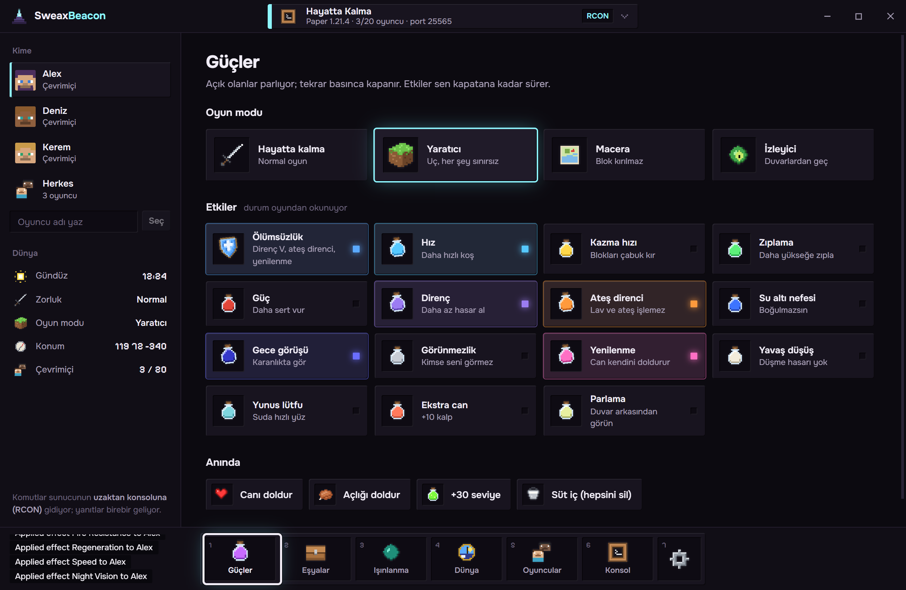
Tıklanabilir sürüm geniş ekranda açılır; telefonda bir ekran görüntüsü.The clickable version opens on a wide screen; on a phone, a screenshot.
Arayüz Türkçe. Sunucu yanıtları, gerçek sunucularda olduğu gibi İngilizce; tek oyunculuda oyunun dilinde.The interface is in Turkish. Server replies are in English, as on real servers; in single-player they are in the game's language.
Bağlantı ekranı yokNo connect screen
Açıldığında bilgisayardaki Minecraft'ı arar ve bulduğu her şeye kendi yolundan girer. Bir şey ancak başka çare yoksa istenir.When it opens it looks for Minecraft on the PC and gets into whatever it finds its own way. It asks for something only when there is no other way.
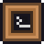
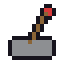
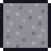
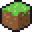
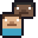
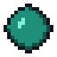
- Tek düğme.One button.
enable-rcon, boş birrcon.portve 24 karakterlik rastgele birrcon.passwordyazılır; dosyanın geri kalanına dokunulmaz.enable-rcon, a freercon.portand a 24-character randomrcon.passwordare written; the rest of the file is left as it was. - Kendiliğinden bağlanır.It links by itself. Sunucu yeniden açıldığı an, birkaç saniyede bir yapılan tarama onu bulur.The scan that runs every few seconds finds the server the moment it is back.
- Hatırlar.It remembers. Son kullandığın dünya bir dahaki açılışta yine açılır.The last world you used opens again next time.
Tek oyunculuda da çalışırIt works in single-player too
Tek oyunculuda uzaktan konsol yok. SweaxBeacon komutu oyunun sohbetine yazar: yalnızca Minecraft penceresine pencere mesajları gönderir, klavyeyi ve fareyi hiç kullanmaz; oyun duraklatma menüsüyle arkada kalır.Single-player has no remote console. SweaxBeacon types the command into the game's chat: it sends window messages to the Minecraft window only, never uses the keyboard or the mouse, and the game stays behind with its pause menu.
- Dünyayı adıyla gösterir.It shows the world by name. Açık dünya, oyunun kilitlediği
session.lock'tan bulunur.The open world is the one whosesession.lockthe game holds. - Yanıtlar oyunun günlüğünden.Replies from the game's log.
latest.logokunur, senin oyununun dil dosyasıyla eşleştirilir.latest.logis read and matched with your own game's language file. - Durum kayıttan.State from the save. Oyun her duraklamada
level.dat'ı yazar; oyun modu, etkiler, konum, saat ve kurallar oradan okunur.The game writeslevel.dateach time it pauses; game mode, effects, position, time and rules are read from it. - Gereken:Needed: hileler (Esc → LAN'a Aç → Hilelere İzin Ver) ve varsayılan olarak açık olan "odak kaybında duraklat".cheats (Esc → Open to LAN → Allow Cheats) and "pause on lost focus", which is on by default.
Altı sayfa, bir hotbarSix pages, one hotbar
Sayfalar oyundaki gibi bir hotbar'dan seçilir. Açık etkiler parlar, geçerli oyun modu işaretlenir, kurallar gerçek durumlarını gösterir.Pages are picked from a hotbar, as in the game. Effects that are on glow, the current game mode is marked, rules show their real state.
GüçlerPowers
Dört oyun modu, Ölümsüzlük ve sen kapatana kadar süren on dört etki; tekrar basınca kapanır.Four game modes, Immortality and fourteen effects that last until you switch them off; press again to switch off.
EşyalarItems
On altı hazır set ve 1.504 eşyada Türkçe ya da İngilizce arama.Sixteen ready sets and a search over 1,504 items, in English or your game's language.
IşınlanmaTeleport
Kayıtlı yerler, koordinatlar, doğuş noktası, yüzeye çıkış, başka bir oyuncu.Saved places, coordinates, the spawn, out to the surface, another player.
DünyaWorld
Gün kadranı, hava, zorluk, on iki oyun kuralı ve doldurma aracı; kural adları sürüme uyar.Day dial, weather, difficulty, twelve game rules and a fill tool; rule names follow the version.
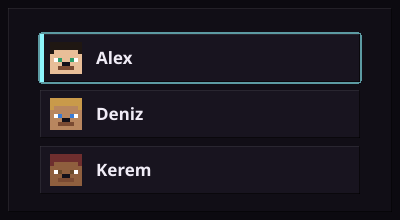
OyuncularPlayers
Kime gideceğini seç; operatör, atma, yasaklama, duyuru ve beyaz liste.Pick who the buttons act on; operators, kick, ban, a message to everyone and the whitelist.
KonsolConsole
Her komut, geçmişiyle; her düğmenin komutu ve yanıtı burada.Any command, with history; every button's command and reply is listed here.
- Fener bloğundan.From the beacon block. Yüzeyler kabartmalı bloklar, yuvalar envanterdeki gibi basık, tek vurgu fener ışığı, her etki kendi iksir renginde.Surfaces are bevelled blocks, slots are pressed in like an inventory, the one accent is beacon light, every effect keeps its potion colour.
- Kendi ikonları.Its own icons. 68 piksel ikonun hepsi koddan çizildi; oyundan hiçbir şey alınmadı.All 68 pixel icons are drawn from code; nothing is taken from the game.
- İki tema.Two themes. Obsidyen ve Kuvars, ya da Windows'a uyar.Obsidian and Quartz, or follow Windows.
EkranlarScreens
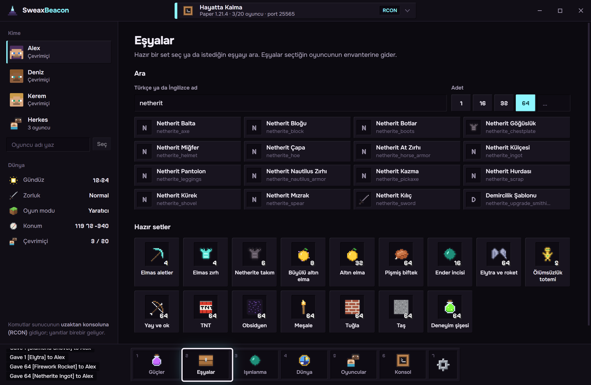
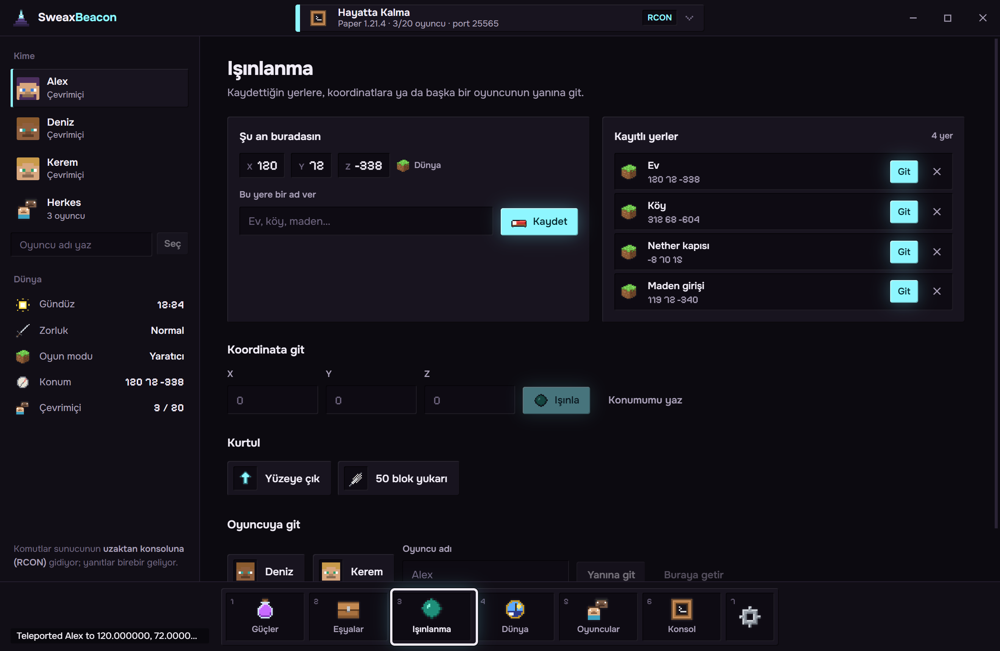
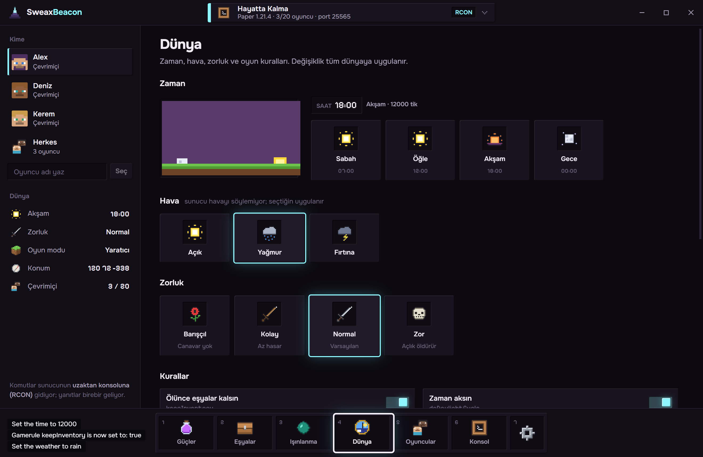
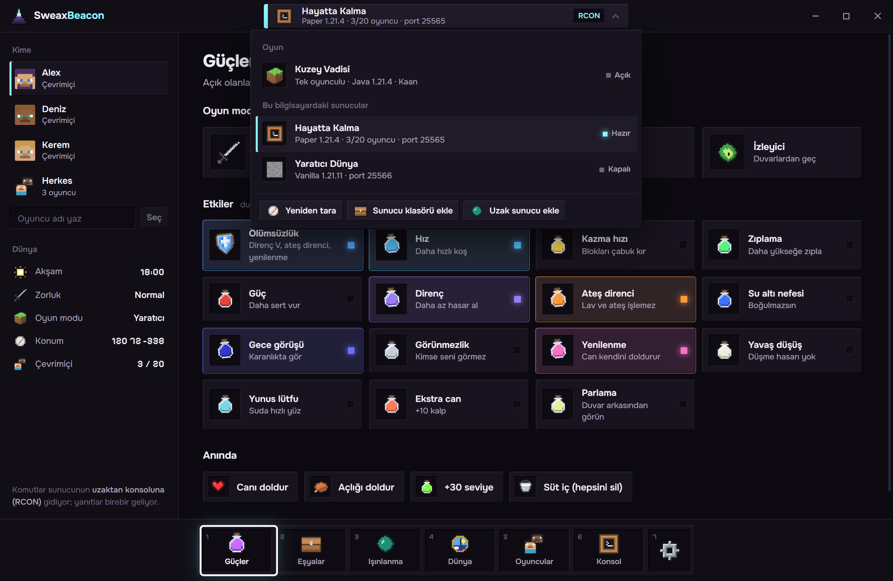
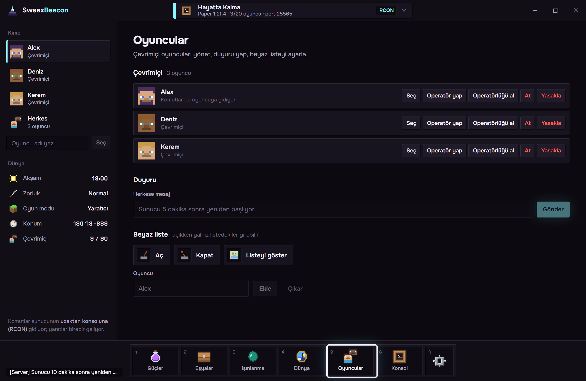
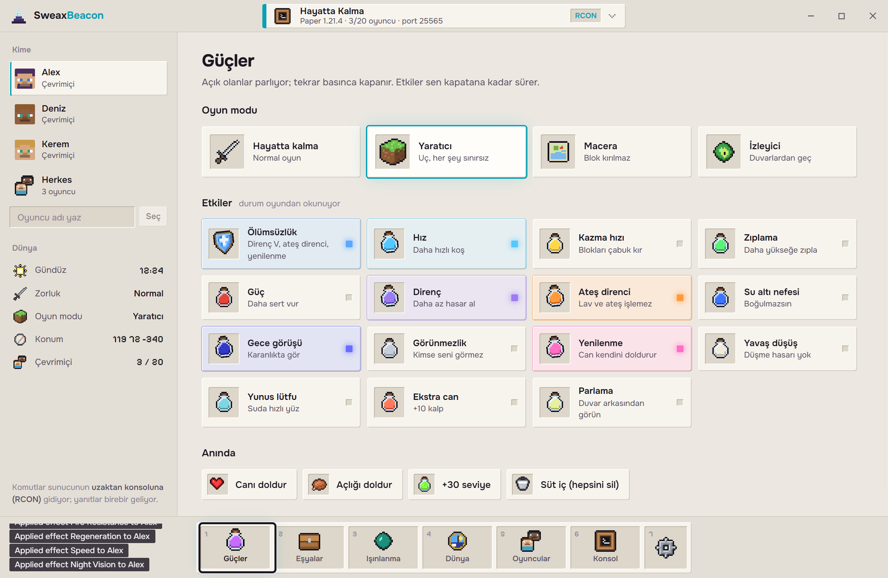
Nasıl çalışırHow it works
Çalışan Java süreçlerinin klasörleri, sunucu listesi ping'i ve oyunun komut satırı; sonra iki yol: RCON ya da oyun penceresi.The folders of running Java processes, the server list ping and the game's command line; then two ways in: RCON or the game window.
Bu bilgisayarda test edildiTested on this PC
| Sunucuyu bul, hazırla, bağlanFind, set up, link to a server | RCON'u kapalı Paper 1.21.4: bulundu, RCON açıldı, Başlat ile yeniden açıldı, bağlanıldı, komutlar ve 8 KB'lık yanıtPaper 1.21.4 with RCON off: found, RCON switched on, started again with Start, linked, commands and an 8 KB reply | 20/20 |
| Java 1.21.11 kural adlarıJava 1.21.11 rule names | Paper 1.21.11'e hiçbir şey sormadan bağlandı, keep_inventory adlarını gösterdiLinked to Paper 1.21.11 without asking anything, showed the keep_inventory names | geçtipass |
| Sohbetle tek oyunculuSingle-player through the chat | Resmî Minecraft 1.21.4 istemcisi: komutlar arka plandaki oyuna yazıldı, yanıtlar okundu, level.dat'ta doğrulandı; fare ve öndeki pencere 25 ms'de bir ölçüldü, hiç değişmediThe official Minecraft 1.21.4 client: commands typed into the background game, replies read, checked in level.dat; mouse and foreground window sampled every 25 ms, never touched | geçtipass |
| Hileler kapalıCheats off | Hilesiz dünyada fark edildi, nasıl açılacağı gösterildiDetected in a world without cheats, with how to switch them on | geçtipass |
| Minecraft 1.20.1 | İstemci, klasör, pencere, ayarlar ve açık dünya bulunduClient, folder, window, options and open world found | geçtipass |
Ayrıntılar ve test betikleri depoda. Sonraki bazı çalıştırmalarda test istemcileri oyunun kendi yükleme ekranında kaldı; SweaxBeacon o durumda yazmayı reddetti, bu yüzden 1.20.1'e yazmak burada gösterilmedi.Details and the test scripts are in the repository. In some later runs the test clients stayed on the game's own loading screen; SweaxBeacon refused to type then, so typing into 1.20.1 is not shown here.
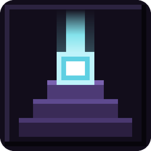
SweaxBeacon 2.0.0
Windows 10 ve 11, 64 bit. Tek tık kurulum, yalnızca senin kullanıcın için. Kod imzalı olmadığı için SmartScreen uyarırsa: Ek bilgi → Yine de çalıştır.Windows 10 and 11, 64-bit. One-click install for your user only. It is not code-signed, so if SmartScreen warns: More info → Run anyway.
Hesap ya da internet gerekiyor mu?Does it need an account or the internet?
Hayır. İnternete hiç bağlanmaz; yalnızca senin seçtiğin ya da bu bilgisayarda çalışan sunuculara bağlanır.No. It never connects to the internet; only to servers you pick or that run on this PC.
Başkalarının sunucusunda çalışır mı?Does it work on other people's servers?
RCON ile yalnızca şifresiyle, sohbetle yalnızca operatörsen. Kendin yazabileceğin komutları gönderir; oyunu değiştirmez.Over RCON only with its password, through the chat only if you are an operator. It sends commands you could type yourself; it does not change the game.
Hangi sürümler?Which versions?
Java Edition; sonsuz etkiler 1.19.4 ve sonrasını gerektirir. Vanilla, Paper, Purpur, Spigot, Fabric, Forge ve NeoForge sunucuları tanınır. Bedrock'ta çalışmaz.Java Edition; effects that never end need 1.19.4 or newer. Vanilla, Paper, Purpur, Spigot, Fabric, Forge and NeoForge servers are recognised. It does not work on Bedrock.